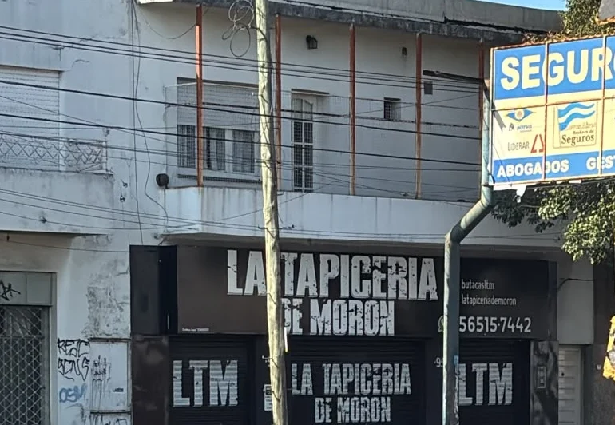

Autos
Butacas, asientos traseros, respaldos y apoyabrazos. Es lo que más nombran las opiniones.
De autos, de motos y de la silla en la que trabajás todo el día. Mandás una foto por WhatsApp y te pasan el presupuesto.

El frente sobre Yrigoyen, entre las vías y el centro de Morón.Es el error que más se repite: se cree que una tapicería de autos hace nada más que autos. Por acá pasan motos y sillas todos los días.
Butacas, asientos traseros, respaldos y apoyabrazos. Es lo que más nombran las opiniones.
El asiento de la moto, retapizado y cosido de nuevo. También aparece en las opiniones de Google.
La silla de la computadora, la de gaming, el sillón. Una clienta contó justamente eso en Google.
No hace falta rehacer todo. También se viene por un detalle, y se va resuelto.
No hace falta desarmar el asiento, ni cargar la silla en el auto, ni pasar por el local para saber cuánto sale.
Una foto de la butaca, del asiento o de la silla, al WhatsApp del frente.
Te contestan por ahí mismo con el precio, sin que tengas que moverte.
Si te sirve, se coordina por el mismo chat cuándo lo llevás.
Esto no está escrito en ningún lado: lo cuenta una clienta en una opinión de Google, que mandó una foto de la silla de su computadora y recibió el presupuesto por WhatsApp.
Contadas una por una sobre las opiniones de Google de La Tapicería de Morón.
La palabra que más aparece: 16 veces en 104 opiniones. “Quedó impecable”, “un muy buen trabajo”.
La segunda, con 10 apariciones. Es de lo que más se habla cuando se sale conforme de un taller.
“Muy buena atención y paciencia”. Y el dueño contesta las opiniones de Google una por una: está del otro lado.
Textuales, de la ficha de Google de La Tapicería de Morón.
“Excelente servicio y atención, el asiento de mi Gol Trend quedó impecable.”
Opinión en Google“Fui por un detalle y realizó un muy buen trabajo, y tuve una excelente atención.”
Opinión en Google“Muy buena atención y paciencia, lo que venden buena calidad.”
Opinión en Google